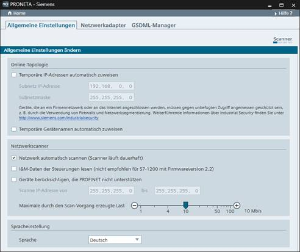

Im „Einstellungen”-Fenster sind drei verschiedene Registerkarten verfügbar:
Diese Modi werden verwendet, um die betrieblichen Details von PRONETA Basic anzupassen.
Hier können Sie verschiedene Parameter in Verbindung mit Netzwerk-Scan und -Visualisierung einstellen.

|
HINWEIS |
Hier vorgenommene Änderungen werden unmittelbar wirksam. Sie werden nicht aufgefordert, die Parameteränderungen zu bestätigen. |